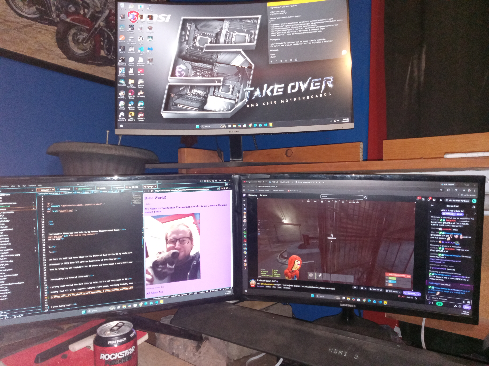

All About Me
- Early Life
- I was born in 1992 and have lived in the State of Iowa in the US my whole life.
- I graduated in 2010 from SCC with an Associates of Arts Degree
- Worked in Shipping and Logistics for 10 years and have about 1 and a half years working remotley from home, training and fact checking AI for Outlier/Scale AI.
- Hobbies, Personailty and General Interests
- I'm pretty anti-social and dont like to talk, so I'm not very good at it
- I mostlty just sit on my computer, playing video games, watching Youtube, reading things. Though now I'm trying to learn how to code with all this down time
- That being said, I'm no slouch around computers, I never learned anything about coding until now, but I have expierence buidling and fixing computers, as well as diagnosing some software and hardware related issues.
- What am I even doing here?
- Well 10 years doing back breaking labor plus a variety of other issues kind of gave me a mental breakdown
- Luckily I have people to help me and a Program that will hopefully teach me some vaulable skills
- What are my goals here? Well hopefully to make it as far as I can, I've had a taste of working comfortably from home for a time, and I want the skills that can potentially get me more
- Strength and Weaknesses
- I learn by doing, reading or listening does nothing for me, due to a lack of focus.
- I'm not a good speaker, I dont know what words are or mean when I try to say them. I often stutter and have small speaking strokes
- I'm a good multitasker, and work well under preassure. Unfortunatly this leads me to completing everything last minute.

This is my computer setup, I have a 3 monitor setup, with a